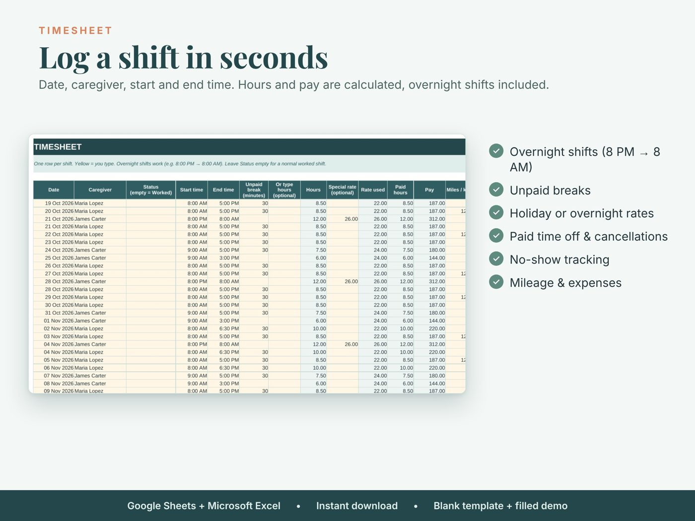
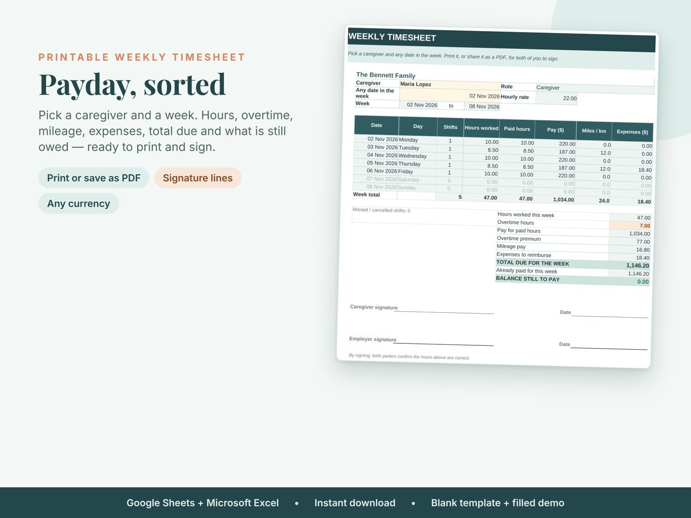
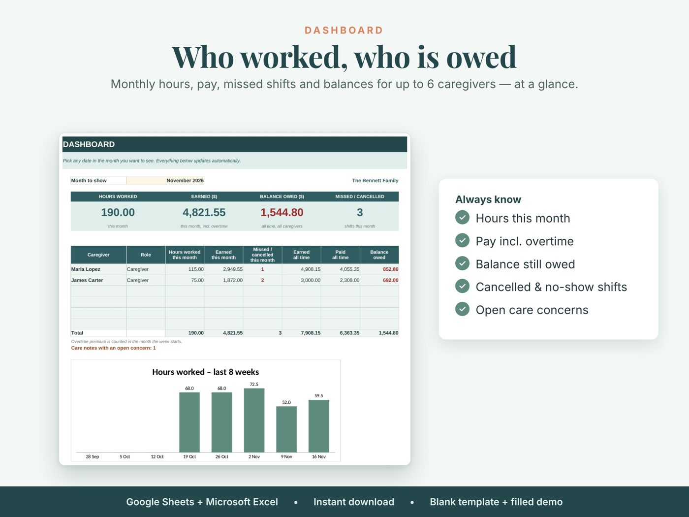
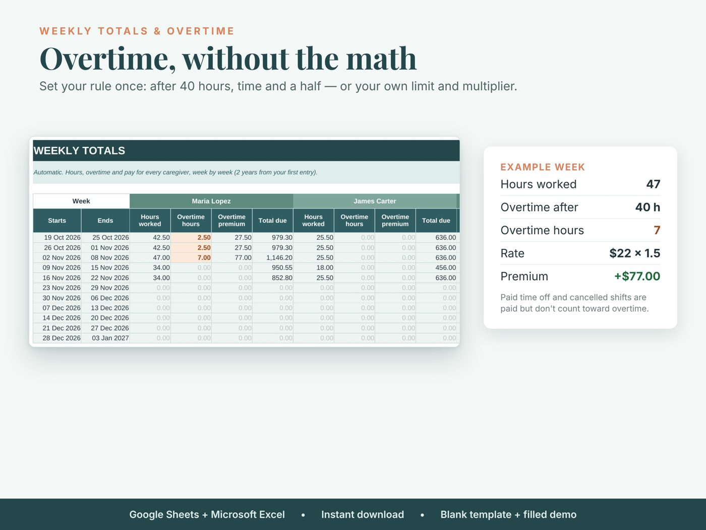
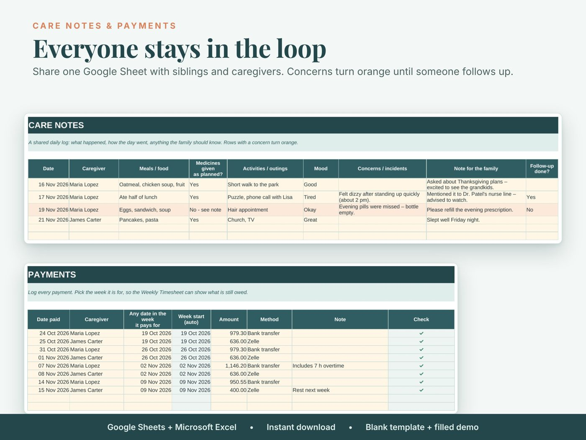
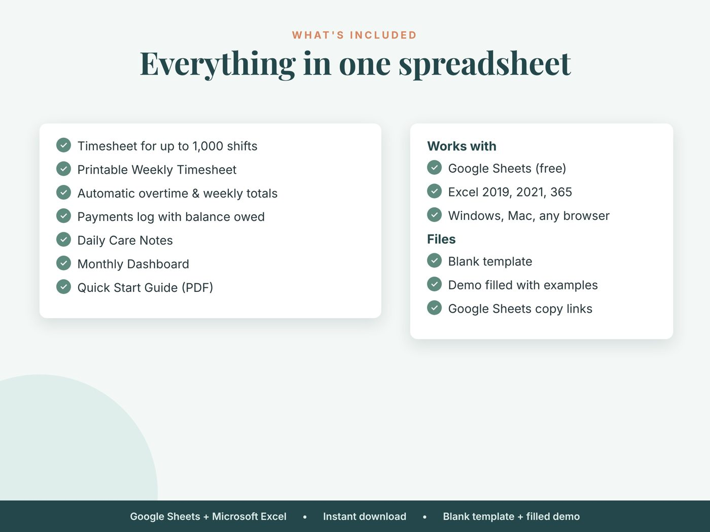

Caregiver & Nanny Timesheet: a caregiver and nanny timesheet spreadsheet for Google Sheets and Excel. Log shifts with start and end times, overnight shifts, automatic overtime, paid time off and cancellations, mileage and expenses, a printable weekly timesheet with total due, a payments log with balance owed and daily care notes. Instant digital download.
View on Etsy →





Get it on Etsy →Want medications, appointments, a care team and a fair cost split between siblings too? See the Family Care Hub.